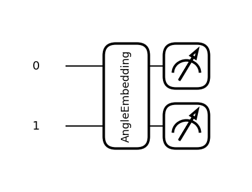

import pennylane as qml
import pennylane.numpy as npLaboratorium 2
import pennylane as qml
n_qubits = 2
dev = qml.device("default.qubit", wires=n_qubits)
@qml.qnode(dev)
def qnode(inputs, weights):
qml.AngleEmbedding(inputs, wires=range(n_qubits))
qml.BasicEntanglerLayers(weights, wires=range(n_qubits))
return [qml.expval(qml.PauliZ(wires=i)) for i in range(n_qubits)]
n_layers = 5
weight_shapes = {"weights": (n_layers, n_qubits)}
qlayer = qml.qnn.TorchLayer(qnode, weight_shapes)Podstawowe importy
Podstawowy obiekt QNode: składa się z device i funkcji kwantowej.
Device - określa na jakiej maszynie będzie wykonywany kod - symulator lub prawdziwa maszyna. - default.qubit - lightning.qubit
Funkcja kwantowa to pythonowa definicja obwodu.
dev = qml.device("default.qubit", wires=1)def quantum_function():
return qml.state()circ = qml.QNode(quantum_function, dev)circ()\[ \ket{\psi} = \ket{0} = [1,0]^T \]
dev = qml.device("default.qubit", wires=1)
def quantum_function():
return qml.state()
circ = qml.QNode(quantum_function, dev)
circ()Bardziej pythonowe rozwiązanie
dev = qml.device("default.qubit", wires=1)
@qml.qnode(dev)
def quantum_function():
return qml.state()
quantum_function()Możemy też zwrócić prawdopodobieństwa stanów bazowych
dev = qml.device("default.qubit", wires=1)
@qml.qnode(dev)
def quantum_function():
return qml.probs()
quantum_function()Stan superpozycji
dev = qml.device("default.qubit", wires=1)
state = np.array([1/np.sqrt(2),1/np.sqrt(2)])
@qml.qnode(dev)
def superposiotion():
qml.ops.StatePrep(state, wires=0)
return qml.state()
superposiotion()\[ \ket{\psi} = \frac{1}{\sqrt{2}} (\ket{0} + \ket{1}) \]
@qml.qnode(dev)
def superposiotion():
qml.ops.StatePrep(state, wires=0)
return qml.probs()
superposiotion()Bramki kwantowe
Bramka X
Bramka X-gate reprezentowana jest przez macierz Pauli-X :
\[ X = \begin{pmatrix} 0 & 1 \\ 1 & 0 \\ \end{pmatrix} \]
Bramka X obraca kubit w kierunku osi na sferze Bloch’a o \(\pi\) radianów. Zmienia \(\ket{0}\) na \(\ket{1}\) oraz \(\ket{1}\) na \(\ket{0}\). Jest często nazywana kwantowym odpowiednikiem bramki NOT lub określana jako bit-flip.
\[ \sigma_x \ket{0} = \ket{1} \,\,\, \sigma_x\ket{1} = \ket{0} \]
dev = qml.device("default.qubit", wires=1)
@qml.qnode(dev)
def qc():
qml.X(wires=0)
return qml.state()
qc()import matplotlib.pyplot as plt
qml.draw_mpl(qc)()Bramka Hadamarda
Bramka Hadamarda przetwarza stan \(|0\rangle\) na kombinacje liniowa (superpozycje) \(\frac{|0\rangle + |1\rangle}{\sqrt{2}}\), co oznacza, że pomiar zwróci z takim samym prawdopodobieństwem stanu 1 lub 0. Stan ten często oznaczany jest jako: \(|+\rangle\).
\[ H = \frac{1}{\sqrt{2}}\begin{pmatrix} 1 & 1 \\ 1 & -1 \\ \end{pmatrix} \]
\[ H\ket{0} = \frac{\sqrt{2}}{2} (\ket{0}+ \ket{1})\] \[ H\ket{1} = \frac{\sqrt{2}}{2}(\ket{0}- \ket{1})\]
dev = qml.device("default.qubit", wires=1)
@qml.qnode(dev)
def qc():
qml.Hadamard(wires=0)
return qml.state()
qml.draw_mpl(qc)()
qc()dev = qml.device("default.qubit", wires=2)
@qml.qnode(dev)
def qc():
qml.Hadamard(wires=0)
qml.Hadamard(wires=1)
return qml.state()
qml.draw_mpl(qc)()
qc()dev = qml.device("default.qubit", wires=1)
@qml.qnode(dev)
def qc(state):
if state==1:
qml.X(wires=0)
qml.Hadamard(wires=0)
qml.PauliX(wires=0)
qml.Hadamard(wires=0)
return qml.state()
qml.draw_mpl(qc)(0)
qc(0)RX
@qml.qnode(dev)
def param_x_gate(theta):
qml.RX(theta, wires=0)
return qml.probs()
theta = np.pi
param_x_gate(theta)CNOT
Jedną z bramek realizującą zadania na dwóch kubitach jest bramka CNOT, która na bazie bitu kontrolnego decyduje czy zastosować operację X do drugiego kubitu.
\[ \text{CNOT} = \begin{bmatrix} 1 \,\, \,\,\, 0 \,\,\,\,\, 0 \,\,\,\,\, 0 \\ 0\,\, \,\,\, 1 \,\,\,\,\, 0 \,\,\,\,\, 0 \\ 0\,\,\,\,\, 0\,\,\,\,\, 0 \,\,\,\,\, 1 \\ 0\,\,\,\,\, 0\,\,\,\,\, 1\,\,\,\,\, 0 \end{bmatrix} \]
\[ \text{CNOT} \ket{00} = \ket{00} \]
\[ \text{CNOT} \ket{10} = \ket{11} \]
import pennylane as qml
import pennylane.numpy as np
dev = qml.device('default.qubit', wires=2)
@qml.qnode(dev)
def circ(stan='0'):
if stan == '1':
qml.X(wires=0)
qml.CNOT(wires=[0,1])
# qml.CNOT(wires=[1,0])
return qml.state()
state = circ()
print(state)state = circ('1')
print(state)qml.draw_mpl(circ)()import pennylane as qml
from pennylane import numpy as np
dev = qml.device('default.qubit', wires=2, shots=100)
@qml.qnode(dev)
def qc():
# qml.Hadamard(wires=0)
qml.X(wires=0)
qml.CNOT(wires=[0,1])
#return qml.state()
return qml.counts()
qc()import matplotlib.pyplot as plt
qml.drawer.use_style("sketch")
fig, ax = qml.draw_mpl(qc)()
plt.show()import pennylane as qml
from pennylane import numpy as np
dev = qml.device('default.qubit', wires=2, shots=100)
@qml.qnode(dev)
def qc():
qml.Hadamard(wires=0)
qml.CNOT(wires=[0,1])
qml.X(wires=1)
#return qml.state()
return qml.counts()
qc()fig, ax = qml.draw_mpl(qc)()
plt.show()import pennylane as qml
from pennylane import numpy as np
dev = qml.device('default.qubit', wires=2, shots=100)
@qml.qnode(dev)
def qc():
qml.Hadamard(wires=0)
qml.CNOT(wires=[0,1])
qml.X(wires=1)
qml.Z(wires=1)
#return qml.state()
return qml.counts()
qc()dev = qml.device('default.qubit', wires=3, shots=100)
@qml.qnode(dev)
def qc():
qml.Hadamard(wires=0)
qml.CNOT(wires=[0,1])
qml.CNOT(wires=[1,2])
#return qml.state()
return qml.counts()
qc()Zadanie - Obwód kwantowy z optymalizacją
- Napisz nowy obwód kwantowy, który zawierać będzie tylko bramkę \(R_X\) dla dowolnego parametru \(\theta\)
- oblicz i uzasadnij, że wartość oczekiwana dla stanu \(\ket{\psi} = R_X \, \ket{0}\) \[<Z> = cos^2(\theta /2)- sin^2(\theta /2) = cos(\theta)\]
Załóżmy, że nasz problem obliczeniowy sprowadza się do wygenerowania wartości oczekiwanej o wartości 0.5.
\[ \textbf{<Z>} = \bra{\psi} \textbf{Z} \ket{\psi} = 0.5 \]
Napisz program znajdujący rozwiązanie - szukający wagę \(\theta\) dla naszego obwodu
- Zdefiniuj funkcję kosztu, którą bedziemy minimalizować \((Y - y)^2\)
- zainicjuj rozwiązanie \(theta=0.01\) i przypisz do tablicy array
np.array(0.01, requires_grad=True) - Jako opt wybierz spadek po gradiencie :
opt = qml.GradientDescentOptimizer(stepsize=0.1) - uzyj poniższego kodu do wygenerowania pętli obiczeń
epochs = 100
for epoch in range(epochs):
theta = opt.step(cost_fn, theta)
if epoch % 10 == 0:
print(f"epoka: {epoch}, theta: {theta}, koszt: {cost_fn(theta)}")import pennylane as qml
from pennylane import numpy as np
dev = qml.device('default.qubit', wires=1)
@qml.qnode(dev)
def par_c(theta):
qml.RX(theta, wires=0)
return qml.expval(qml.PauliZ(0))
def cost_fn(theta):
return (par_c(theta) - 0.5)**2
theta = np.array(0.01, requires_grad=True)
opt = qml.GradientDescentOptimizer(stepsize=0.1)
epochs = 100
for epoch in range(epochs):
theta = opt.step(cost_fn, theta)
if epoch % 10 == 0:
print(f"epoka: {epoch}, theta: {theta}, koszt: {cost_fn(theta)}")
print(f"Optymalizacja zakonczona dla theta={theta}, koszt: {cost_fn(theta)}")import pennylane as qml
from pennylane import numpy as np
dev = qml.device('default.qubit', wires=1)
@qml.qnode(dev, interface="torch")
def par_c(theta):
qml.RX(theta, wires=0)
return qml.expval(qml.PauliZ(0))
def cost_fn(theta):
target = 0.5
return (par_c(theta) - target) ** 2
import torch
from torch.optim import Adam
theta = torch.tensor(0.01, requires_grad=True)
optimizer = Adam([theta], lr=0.1)
epochs = 100
for epoch in range(epochs):
optimizer.zero_grad()
loss = cost_fn(theta)
loss.backward()
optimizer.step()
if epoch % 10 == 0:
print(f"epoka: {epoch}, theta: {theta}, koszt: {cost_fn(theta)}")Jeszcze jeden przykład
- Napisz obwód kwantowy, który zawierać będzie bramkę \(R_X\) dla parametru \(\theta_1\) oraz \(R_Y\) dla parametru \(\theta_2\)
- oblicz i uzasadnij, że wartość oczekiwana dla stanu \(\ket{\psi} = R_Y(\theta_2) R_X(\theta_1) \, \ket{0}\)
\[<Z> = \cos(\theta_1) \cos(\theta_2)\]
Mozliwe wartości średniej zawierają się w przedziale \(-1\), \(1\).
Przyjmij załozenie, ze optymalne rozwiązanie realizowane jest dla wartości oczekiwanej = 0.4
import pennylane as qml
from pennylane import numpy as np
dev = qml.device('default.qubit', wires=1)
@qml.qnode(dev)
def par_c(theta):
qml.RX(theta[0], wires=0)
qml.RY(theta[1], wires=0)
return qml.expval(qml.PauliZ(0))
def cost_fn(theta):
return (par_c(theta) - 0.4)**2
theta = np.array([0.01, 0.02], requires_grad=True)
opt = qml.GradientDescentOptimizer(stepsize=0.1)
epochs = 100
for epoch in range(epochs):
theta = opt.step(cost_fn, theta)
if epoch % 10 == 0:
print(f"epoka: {epoch}, theta: {theta}, koszt: {cost_fn(theta)}")
print(f"Optymalizacja zakonczona dla theta={theta}, koszt: {cost_fn(theta)}")Zadanie
Celem jest znalezienie najmnieszej wartości własnej dla Hamiltonianu \(H = Z_0 Z_1 + Z_0\)
Tego typu hamiltoniany opisują układy fizyczne np. systemy spinowe.
\(Z_0 Z_1\) - mozna interpretować jako krawedz miedzy dwoma wierzchołkami.
\(Z_0\) - efekty lokalne wierzchołka 0
import pennylane as qml
from pennylane import numpy as np
import random
dev = qml.device("default.qubit", wires=2)
H = qml.PauliZ(0) @ qml.PauliZ(1) + qml.PauliZ(0)
@qml.qnode(dev)
def circuit(params):
qml.RY(params[0], wires=0)
qml.RY(params[1], wires=1)
qml.CNOT(wires=[0,1])
return qml.expval(H)
def cost_fn(params):
return circuit(params)
init_param = [random.uniform(0, 2*3.1415) for _ in range(2)]
params = np.array(init_param, requires_grad=True)
opt = qml.GradientDescentOptimizer(stepsize=0.01)
epochs = 500
for epoch in range(epochs):
params = opt.step(cost_fn, params)
if epoch % 50 == 0:
print(f"epoka: {epoch}, theta: {params}, koszt: {cost_fn(params)}")
print(f"Optymalizacja zakonczona dla theta={params}, koszt: {cost_fn(params)}")klasyczne dane
import pennylane as qml
import pennylane.numpy as np
N = 3
wires = range(N)
dev = qml.device('default.qubit', wires)@qml.qnode(dev)
def basis_encoding(features):
qml.BasisEmbedding(features, wires)
return qml.probs()\[ \ket{111} = \ket{1}\otimes \ket{1} \otimes \ket{1} = [0 0 0 0 0 0 0 1]^T\]
basis_encoding([1,1,1])basis_encoding(7)qml.draw_mpl(basis_encoding)([1,1,1])n_wires = 4
dev = qml.device('default.qubit', wires= n_wires)
@qml.qnode(dev)
def circ(features):
for i in range(len(features)):
if features[i] == 1:
qml.X(i)
qml.Barrier()
qml.Hadamard(1)
qml.CNOT([1,3])
return qml.state()circ([1,0,1,0])qml.draw_mpl(circ, level='device', scale=0.7)([1,0,1,0])Amplitude encoding
import pennylane as qml
N = 3
wires = range(N)
dev = qml.device("default.qubit", wires)
@qml.qnode(dev)
def circuit(features):
qml.AmplitudeEmbedding(features, wires)
return qml.state()circuit([0.625,0.0,0.0,0.0,0.625,0.375,0.25,0.125])import pennylane as qml
N = 3
wires = range(N)
dev = qml.device("default.qubit", wires)
@qml.qnode(dev)
def circuit(f=None):
qml.AmplitudeEmbedding(features=f, wires=dev.wires, normalize=True, pad_with=0)
return qml.expval(qml.PauliZ(0)), qml.state()vect = [0.1, -0.3, 0.5, 0.4, 0.2]norm = np.linalg.norm(vect)
norm_vec = np.round([i / norm for i in vect], 4)
print(f"Vec: {vect}, Norm{norm_vec}")res, state = circuit(f=norm_vec)
res2, state2 = circuit(f=vect)state.real, state2.realqml.draw_mpl(circuit)(norm_vec)import pennylane as qml
import pennylane.numpy as np
from sklearn.preprocessing import normalize
from sklearn.datasets import load_wine
data = load_wine()
X = data.data
y = data.targetdef prepare_ampl(x, target_len = 16):
padded = np.pad(x, (0, target_len - len(x)), mode="constant")
normed = padded / np.linalg.norm(padded)
return np.array(normed, requires_grad=True)x0 = X[0]
features = prepare_ampl(x0)featurestensor([1.32644724e-02, 1.59397384e-03, 2.26512072e-03, 1.45415157e-02,
1.18382852e-01, 2.61001565e-03, 2.85237424e-03, 2.61001565e-04,
2.13461994e-03, 5.25731723e-03, 9.69434383e-04, 3.65402190e-03,
9.92738094e-01, 0.00000000e+00, 0.00000000e+00, 0.00000000e+00], requires_grad=True)n_qubits = 4
dev = qml.device('default.qubit', wires = n_qubits)
@qml.qnode(dev)
def amplitude_circ(x):
qml.AmplitudeEmbedding(features=x, wires=range(n_qubits), normalize=False)
return qml.state()state = amplitude_circ(features)statetensor([1.32644724e-02+0.j, 1.59397384e-03+0.j, 2.26512072e-03+0.j,
1.45415157e-02+0.j, 1.18382852e-01+0.j, 2.61001565e-03+0.j,
2.85237424e-03+0.j, 2.61001565e-04+0.j, 2.13461994e-03+0.j,
5.25731723e-03+0.j, 9.69434383e-04+0.j, 3.65402190e-03+0.j,
9.92738094e-01+0.j, 0.00000000e+00+0.j, 0.00000000e+00+0.j,
0.00000000e+00+0.j], requires_grad=True)@qml.qnode(dev)
def amp_circ(x):
qml.AmplitudeEmbedding(features=x, wires=range(n_qubits), normalize=True, pad_with=0)
return qml.state()state2 = amp_circ(X[0])state2array([1.32644724e-02+0.j, 1.59397384e-03+0.j, 2.26512072e-03+0.j,
1.45415157e-02+0.j, 1.18382852e-01+0.j, 2.61001565e-03+0.j,
2.85237424e-03+0.j, 2.61001565e-04+0.j, 2.13461994e-03+0.j,
5.25731723e-03+0.j, 9.69434383e-04+0.j, 3.65402190e-03+0.j,
9.92738094e-01+0.j, 0.00000000e+00+0.j, 0.00000000e+00+0.j,
0.00000000e+00+0.j])Angle encoding
\[ x \to R_k(x) \ket{0} = e^{-i\,x \frac{\sigma_k}{2}} \ket{0} \]
import pennylane as qml
import pennylane.numpy as np
features= [np.pi/3, np.pi/4]
dev = qml.device('default.qubit', wires=2)
@qml.qnode(dev)
def circ(features):
qml.AngleEmbedding(features=features, rotation='Y', wires=range(2))
return qml.probs(wires=[0,1])np.round(circ(features), 3)tensor([0.64 , 0.11 , 0.213, 0.037], requires_grad=True)qml.draw_mpl(circ)(features)
import pennylane as qml
import pennylane.numpy as np
from sklearn.preprocessing import normalize
from sklearn.datasets import load_wine
data = load_wine()
X = data.data
y = data.targetfrom sklearn.preprocessing import MinMaxScaler
scaler = MinMaxScaler(feature_range=(0, np.pi))
X_saled = scaler.fit_transform(X)dev = qml.device('default.qubit', wires=13)
@qml.qnode(dev)
def emb(x):
qml.AngleEmbedding(x, wires=range(len(x)), rotation='Y')
return qml.expval(qml.PauliZ(0))emb(X_saled[0])np.float64(-0.8794737512064895)@qml.qnode(dev)
def emb(x):
qml.AngleEmbedding(x, wires=range(len(x)), rotation='Y')
return [qml.expval(qml.PauliZ(i)) for i in range(len(x))]emb(X_saled[0])[np.float64(-0.8794737512064895),
np.float64(0.8240675736145868),
np.float64(-0.2248601123708277),
np.float64(0.6897237772781044),
np.float64(-0.3668542188130566),
np.float64(-0.39017706326055457),
np.float64(-0.2298992328822939),
np.float64(0.6300878435817112),
np.float64(-0.28820944852718955),
np.float64(0.3913341989876884),
np.float64(0.14001614496862924),
np.float64(-0.9957653484788057),
np.float64(-0.1915177132878786)]